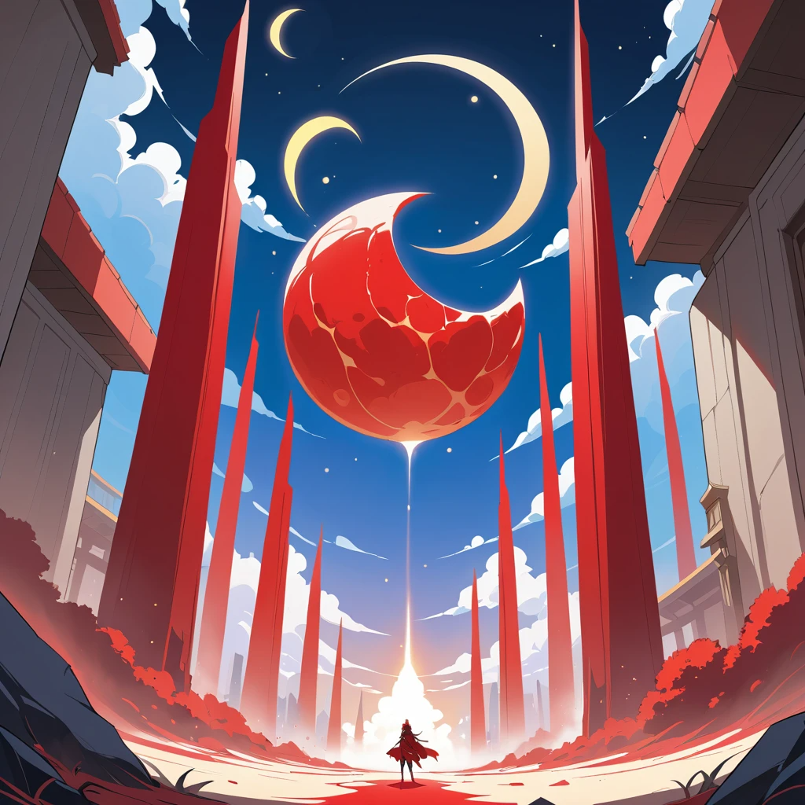

Todo sobre Pirineo
Pirineo es una empresa cooperativa que nace en 2022 Salamanca, España. El deseo de sus creadores era meterse en una industria donde la marca española no esta del todo presente a nivel mundial, además de su gran pasión por los videojuegos, por lo que les hizo meterse a una gran aventura al nivel de dificultad de un souls.
La primera gran creación de Pirineo, Do-Re-Mi, rápidamente se convirtió en un fenómeno, alcanzando niveles de éxito impresionantes.
Desde su lanzamiento, su jugabilidad única, su increíble banda sonora y su innovadora propuesta se ganaron el aplauso tanto de jugadores como de críticos. Esto se reflejó en su nominación a los premios GOTY, y su victoria en la categoría de mejor juego de estudio independiente en los Game Awards, lo cual consolidó aún más nuestra posición en la industria.
Además, Do-Re-Mi recibió una gran cantidad de premios adicionales, que destacaron la calidad de su diseño, la profundidad de su narrativa y el reto que presentaba. Este juego indie transporta a los jugadores fascinante aventura, donde deberán superar una serie de complejos puzzles y desafíos, enfrentarse a temibles enemigos mitológicos y derrotar poderosos ángeles, todo ello mientras siguen el ritmo frenético y pegajoso de la música que acompaña cada paso.
La combinación de mecánicas de juego innovadoras y la música que evoluciona con el progreso del jugador convierte a Do-Re-Mi en una experiencia única, donde cada movimiento y decisión es crucial para avanzar en este desafiante y envolvente mundo.
El siguiente gran lanzamiento que la comunidad está esperando con gran expectación es Magic Hunter, un título exclusivo bajo la dirección de Pirineo que llegará a PlayStation 5, prometiendo cautivar a los jugadores con una experiencia única y envolvente. En este nuevo juego, nos adentraremos en un mundo ficticio, pero profundamente inspirado en la rica y variada cultura de España, que se presentará a través de escenarios llenos de historia, astrología y misterio. La trama girará en torno a cazadores de fantasmas, seres con habilidades sobrenaturales cuya procedencia es un enigma en sí misma, ya que sus poderes parecen provenir de fuentes desconocidas y de naturaleza algo oscura. Estos cazadores serán los personajes principales de la aventura, y la historia se desarrollará desde su punto de vista, permitiendo que los jugadores experimenten sus desafíos, conflictos internos y descubrimientos a medida que se enfrentan a fuerzas paranormales, que amenazan con destruir el equilibrio entre el mundo real y el sobrenatural. El juego, que mezcla elementos de acción, misterio y aventura, promete mantener a los jugadores al borde de sus asientos mientras exploran un mundo de gran riqueza visual y jugabilidad, lleno de giros sorprendentes y secretos por descubrir. Cada paso en la historia estará marcado por decisiones que impactarán directamente en el desarrollo de la trama y el destino de los cazadores, lo que añade una capa de profundidad y rejugabilidad.
Por último, también tenemos otros proyectos en marcha para fomentar el desarrollo de videojuegos. También, tenemos ya en el congelador algunos nuevos juegos que saldrán despúes del ya mencionado Magic Hunter como será Flappy Bird y quién sabe si nos da por hacer un tactical shooter (que del aire no se come).